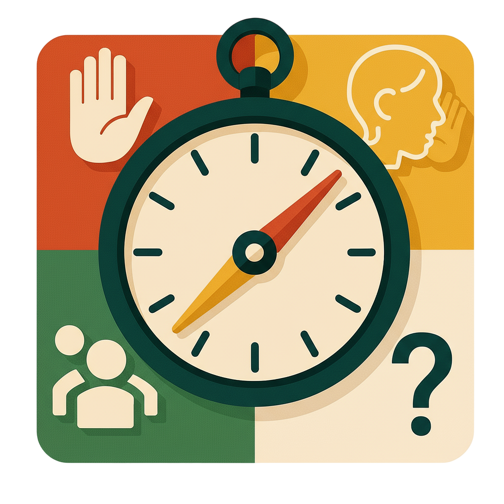

Webapplicatie · 2025
Klascompas
Een rustige digitale plek waar leerlingen en docenten overzicht houden op alles wat een schooldag vraagt.
02 / PROJECTEN
Een greep uit projecten waarin ik onderzoek, ontwerp en technologie samenbreng.
Webapplicatie · 2025
Een rustige digitale plek waar leerlingen en docenten overzicht houden op alles wat een schooldag vraagt.

De opdrachtOntwerp een oplossing die hulpvragen in de klas inzichtelijk maakt, zodat leerlingen niet onnodig hoeven te wachten en leraren hun aandacht eerlijker en efficiënter kunnen verdelen.
Mijn rol Onderzoek, interfaceontwerp, front-end en back-end development.
Open volledige case ↗Persoonlijk · 2024
Een visuele oefening in identiteit, code en de vraag wat een online profiel eigenlijk vertelt.
De opdracht Vertaal een persoonlijke zoektocht naar een digitale ervaring die niet alleen informatie geeft, maar ook iets laat voelen.
Mijn rol Concept, visuele richting en interaction design.
Open volledige case ↗Experiment · 2024
Een klein archief van beelden, routes en gedachten verzameld tussen vertrek en aankomst.
De opdracht Maak van losse observaties onderweg een compact verhaal waarin beeld en beweging elkaar versterken.
Mijn rol Art direction, animatie en technische uitwerking.
Open volledige case ↗